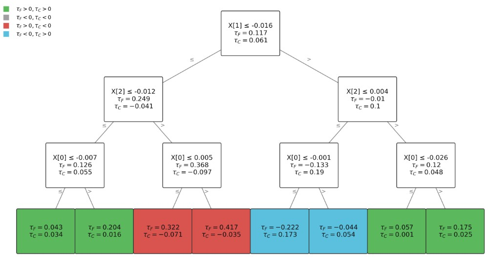

Ebrahim Barzegary
ESSEC Business School
Keywords: heterogeneous treatment effects · two outcomes · recursive partitioning · contradiction segments · marketing experiments
▲ Clicks from more sends
▼ Higher unsubscribe rate for some users
▲ Short-term sales from bold claims
▼ Higher returns when expectations mismatch
▲ Orders during the promotion
▼ Full-price purchases afterward
▲ Engagement with provocative content
▼ Long-run brand trust / satisfaction
This paper maps or learns a frontier of good policies
For each segment, the intervention can improve or degrade the firm’s primary and secondary objectives — giving four possible patterns:
A standard policy ships the treatment when the primary metric improves — covering Regions 1 and 2. Region 2 is the blind spot.
Setup: email A/B test — primary: short-term sales · secondary: long-term retention.
Takeaway: Region 2 is the blind spot of “primary wins + average guardrail passes.”
Diagnosis finds the segment before full rollout; fixing it needs a later iteration.
Run a randomized experiment measuring both outcomes on the same users.
Apply a segmentation algorithm to find where the two outcomes diverge — especially Region 2, the hidden trade-off.
Investigate why the trade-off appears for those segments. Redesign the intervention, then test again.
↻ Each iteration feeds better data into the next diagnosis. This paper contributes the diagnostic tool for Step 2.
Three models to fit, tune, validate
Many knobs per stage → overfitting risk
Stage-1 error flows into Stage-2 labels

Same recipe: split, score, prune. Different objective → different segments.
Homogeneous segments for prediction.
Targeting from one outcome.
Two outcomes → diagnosis.
We compare our diagnostic approach against a benchmark rooted in the optimization paradigm (Rafieian et al., 2025).
Can a purpose-built diagnostic tool match or beat a general-purpose optimization pipeline at finding the trade-off region?
We generate synthetic experiments where every unit’s true region type is known.
\(k\) categorical variables, each one-hot encoded.
Total features fixed at 30:
n_categories = [30/k] × k.
Category combinations are randomly assigned to four regions. Region 2 receives a rareness share of all combinations; the remaining three regions split the rest equally.
| Factor | Range | What it controls |
|---|---|---|
| Noise \(\sigma\) | Log-uniform [0.01, 10] | Outcome noise — harder to detect effects when high |
| Sample size | Log-uniform [10 000, 500 000] | Training observations — from small to large experiments |
| Sparsity \(k\) | {1, 2, 3, 4, 5, 6} | Low \(k\): narrow tree; high \(k\): wider, deeper tree |
| Rareness | Uniform [0.01, 0.50] | Share of Region 2 in the data — rarer = harder to find |
| Intensity | Log-uniform [0.1, 1.0] | Strength of treatment effects — weaker = subtler signal |
Bars show the mean across 4 400 simulations; whiskers show ±1 std.
Our method gains an edge as noise increases, sample size grows, and the trade-off region is rare — exactly the conditions in most industry A/B tests (large data, small Region 2, noisy signals)
DivergenceTree produces ~25 leaves vs. ~70–150 for two-step, and runs 30× faster on CPU — critical when teams need to re-diagnose after every intervention redesign
A single model with one tuning dial (\(\lambda\)) avoids the multi-model pipeline of two-step — fewer degrees of freedom, making results more reproducible and suitable for regulatory audits
Scenario. A consumer electronics brand tests new ad creative (premium features) against the existing value-focused creative. Primary: unit sales. Secondary: 30-day product return rate.
1. Test. The new creative lifts unit sales by about 12%; the aggregate return rate ticks up slightly but is not significant at the overall level.
2. Diagnose. A clear contradiction appears for buyers with lower prior spending and limited category experience: sales rise by about 22% but returns rise by about 35%. Experienced buyers show a sales gain without a return spike.
3. Improve. Focus groups find premium framing set expectations the mid-range product did not meet. The team ships an alternative creative for that segment—realistic use cases and value-for-money—keeping the lift while moving returns back toward baseline in a follow-up test.
Scenario. An online fashion retailer emails a 25% discount to a random subset; everyone else gets a standard newsletter. Primary: immediate purchase rate. Secondary: repeat purchasing within 90 days.
1. Test. The discount email raises immediate purchases by about 30%; repeat purchasing shows a small, non-significant decline on average.
2. Diagnose. Two Region 2-style segments emerge: Segment A (moderately price-sensitive, mixed purchase history)—about +35% immediate purchases but about −10% repeat; Segment B (deal-seekers)—over +45% immediate but about −30% repeat, consistent with price anchoring at the discounted level.
3. Improve. Profit math keeps the 25% offer for Segment A; for Segment B the team redesigns to a loyalty-linked offer (e.g. discount today plus a modest next-purchase incentive) and retargets by email.
Scenario. A platform tests a new recommender aimed at engagement (likes, shares, time on site). Secondary: emotional valence of user-generated content (sentiment of posts after exposure)—higher valence reflects more extreme language.
1. Test. The new algorithm raises average engagement by about 8%; aggregate sentiment is essentially unchanged.
2. Diagnose. A segment with narrow consumption patterns and membership in ideologically concentrated communities shows about +15% engagement and a significant shift toward more extreme language in subsequent posts—engagement gains paired with higher polarization.
3. Improve. Analysis suggests echo-chamber reinforcement; the team adds a diversity constraint (minimum exposure outside the usual cluster). A follow-up experiment keeps most of the engagement gain while reducing the valence shift to non-significant levels.
Any questions / suggestions?